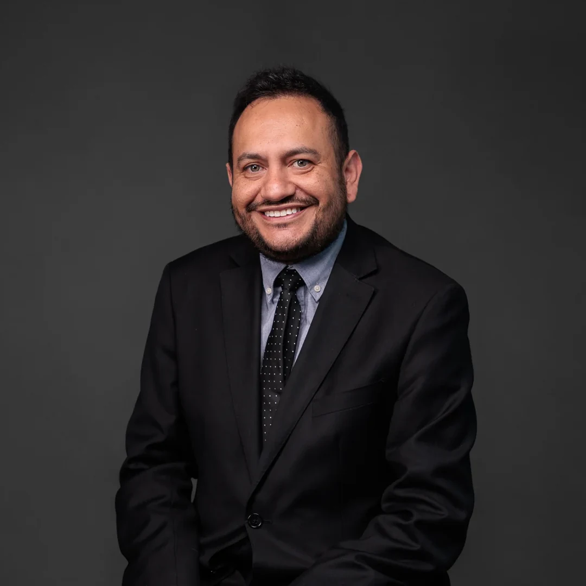

Infraestructura digital
Data centers, inversión, energía, conectividad, permisos y condiciones habilitantes.
Sociólogo y profesional de asuntos públicos especializado en políticas públicas, telecomunicaciones, infraestructura digital, data centers, conectividad y desarrollo territorial.

Sebastián Elgueta Godoy cuenta con más de 13 años de experiencia entre sector público, asesoría legislativa, consultoría e investigación aplicada. Su trabajo se concentra en sectores regulados y en la relación entre instituciones, inversión, infraestructura y territorio.
Actualmente desarrolla trabajo en asuntos públicos y análisis estratégico, además de investigación pública sobre telecomunicaciones, infraestructura digital, data centers, conectividad e inclusión digital.
Para referencias editoriales se recomienda utilizar el nombre completo Sebastián Elgueta Godoy y enlazar el sitio oficial como perfil principal. Cuando la referencia sea específicamente al Atlas, utilizar la ficha pública del proyecto.
Data centers, inversión, energía, conectividad, permisos y condiciones habilitantes.
Regulación, brechas de conectividad, despliegue de redes e inclusión digital.
Diseño institucional, implementación, regulación y articulación público-privada.
Series longitudinales, benchmarking, evidencia territorial y datos abiertos.
URL preferida para enlazar el perfil profesional de Sebastián Elgueta Godoy.
https://selguetagodoy.github.io/URL preferida cuando la referencia sea al Atlas, su metodología o resultados.
https://selguetagodoy.github.io/atlas-desconexion-digital-chile.htmlVersión breve y verificable de trayectoria, formación y áreas de especialización.
Abrir biografía →Versiones 1:1, 4:3 y 16:9 para perfiles, notas y eventos.
1:1 → · 4:3 → · 16:9 →Publicación de opinión firmada por Sebastián Elgueta Godoy.
Leer →Investigación y base de datos de autoría de Sebastián Elgueta Godoy, presentada en el Congreso COTEL 2026 y difundida públicamente por COTEL.
Ver proyecto → · Índice de Vulnerabilidad Digital →Observatorio público comparado sobre infraestructura digital latinoamericana.
Ver proyecto →Proyecto público de datos sobre conectividad e inclusión digital en Chile.
Ver dataset →COTEL identifica públicamente a Sebastián Elgueta Godoy como autor del Atlas de la Desconexión Digital.
Ver fuente →Cobertura periodística sobre el Congreso y la presentación del Atlas.
Ver cobertura →Republicación que identifica a Sebastián Elgueta Godoy como expositor del estudio.
Ver cobertura →Referencia profesional externa con cargo y trayectoria.
Ver ficha →Para trayectoria y contacto profesional, utilizar LinkedIn o el sitio oficial.
English biography →